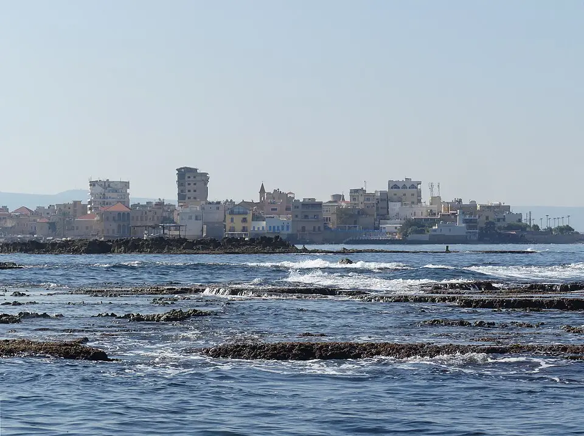
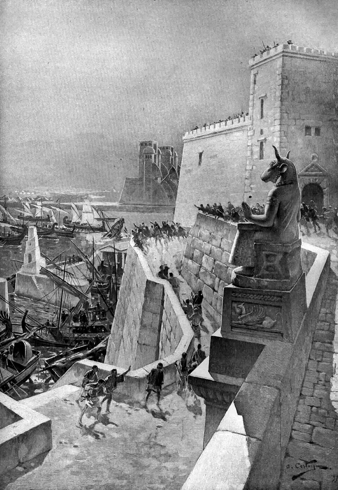
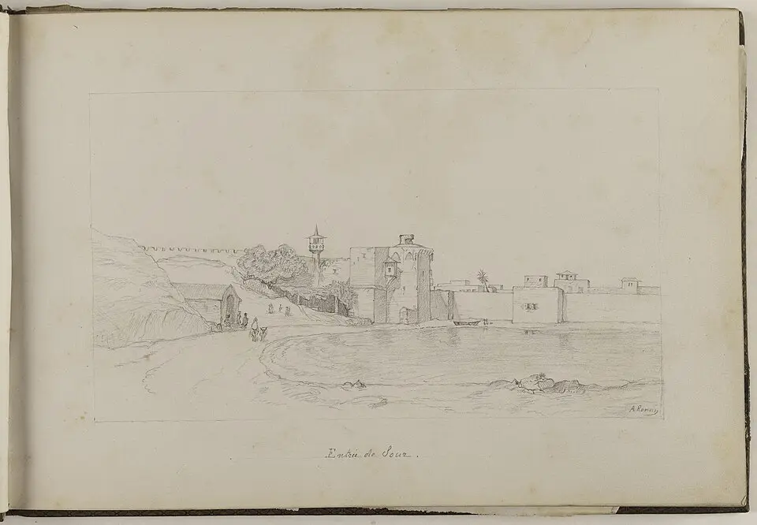
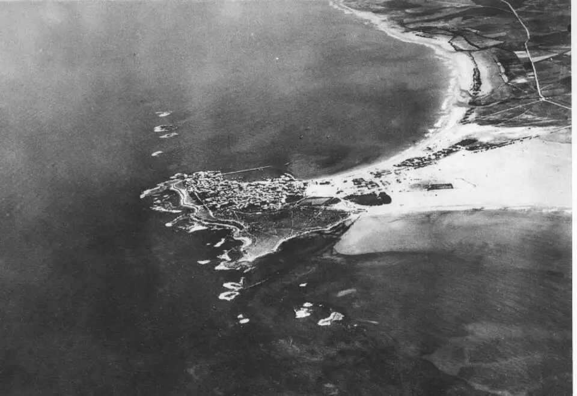

Alexander đắp đường ra biển để chiếm một hòn đảo
Năm 332 TCN, Alexander không có hạm đội mạnh, nên ông đắp một con đường ra biển. Hơn hai nghìn năm sau, hòn đảo Tyre đã thành bán đảo.

Đầu năm 332 TCN, Alexander Đại đế gửi sứ giả đến Tyre với một đề nghị. Ông muốn vào thành để tế thần Melqart, vị thần mà người Hy Lạp đồng nhất với Heracles. Người Tyre từ chối, bảo ông hãy tế ở ngôi đền trên đất liền. Họ tuyên bố không cho người Ba Tư lẫn người Macedonia vào thành mới. Lần thương lượng thứ hai kết thúc tồi tệ hơn: sứ giả của Alexander bị giết và ném từ trên tường xuống biển. Bảy tháng sau đó là một trong những cuộc vây hãm lạ nhất thời cổ đại, vì nó thay đổi cả hình dạng bờ biển.
Lần thương lượng thứ hai kết thúc tồi tệ hơn: sứ giả của Alexander bị giết và ném từ trên tường xuống biển.
Một thành phố trên đảo
Tyre là thành bang lớn nhất của người Phoenicia. Thành cũ trên đất liền đã bị bỏ, và dân Tyre sống trên một hòn đảo cách bờ khoảng 1 km, có tường thành chạy sát mép nước. Khi đó thành có khoảng 40.000 người. Carthage, thuộc địa cũ của Tyre, hứa gửi hạm đội đến cứu.
Alexander không có hải quân đủ mạnh. Nếu bỏ qua Tyre, người Ba Tư vẫn còn một hải cảng trong vùng. Vì vậy ông chọn cách tấn công từ đất liền: đắp một con đường đá ra đảo, trên một dải đất ngầm tự nhiên sâu không quá hai mét.
Con đường, tháp gỗ và con thuyền lửa


Theo Diodorus, con đường rộng khoảng 200 bộ. Càng gần tường thành, nước càng sâu, và quân thợ bị bắn từ trên tường xuống lẫn từ thuyền Tyre. Alexander cho dựng hai tháp gỗ cao khoảng 50 m ở đầu đường, bọc da sống để chống tên lửa, trên đỉnh đặt máy bắn đá.
Người Tyre đáp trả bằng một chiếc thuyền chở ngựa cũ. Họ chất đầy cành khô, nhựa thông, lưu huỳnh, treo những vạc dầu lên cột buồm để khi cột cháy, dầu đổ xuống boong. Họ đè nặng đuôi thuyền cho mũi nhô lên, châm lửa rồi lao thuyền vào con đường. Cả hai tháp bốc cháy.
Bước ngoặt đến từ chính các thành Phoenicia khác. Sau khi Byblos, Arwad và Sidon quy phục, 80 chiến thuyền của họ về tay Alexander. Vua Síp gửi thêm 120 chiếc, các thành Ionia gửi 23 chiếc. Alexander có 223 thuyền và làm chủ mặt biển.
Những khối đá lớn dưới nước ngăn thuyền phá thành áp sát tường, nên ông cho thuyền cẩu kéo đi. Thợ lặn Tyre cắt dây neo, ông thay dây bằng xích. Cuối cùng, thuyền phá thành mở được một lỗ hổng ở phía nam đảo, và quân Macedonia tràn vào. Nhưng không có người Tyre nào để lại lời kể về những ngày ấy.
Sử sách chép gì


Không có nguồn nào của người Tyre còn lại. Mọi chi tiết đến từ các sử gia viết sau đó hàng trăm năm, và con số của họ không khớp nhau. Arrian chép khoảng 8.000 người Tyre bị giết, 30.000 người bị bán làm nô lệ, còn phía Macedonia mất 400 người. Quintus Curtius viết 6.000 lính bị giết trong thành và 2.000 người bị đóng đinh trên bãi biển. Diodorus đưa ra con số 13.000 người bị bán làm nô lệ.
Những ai trú trong đền Melqart, kể cả vua Azemilcus và gia đình, được Alexander tha. Polyaenus còn kể một phiên bản khác hẳn: Alexander đang hành quân ở Arabia, quay về đúng lúc quân Tyre đánh ra ngoài, và chiếm thành bằng một đòn bất ngờ.
Arrian ghi một chi tiết nhỏ. Người Tyre nhận ra chiều nào Alexander cũng về đất liền ăn và nghỉ, nên chọn giờ đó để đột kích. Hôm ấy, vì lý do nào đó, ông bỏ giấc ngủ trưa, và kịp chèo thuyền vòng quanh đảo chặn đường rút của họ. Cuộc vây hãm kết thúc, nhưng con đường thì vẫn tiếp tục thay đổi bờ biển.
Từ đảo thành bán đảo


Con đường của Alexander chặn dòng cát chảy dọc bờ. Cát bồi dần hai bên, biến nó thành một eo đất. Các nghiên cứu địa chất cho rằng đến đầu thời La Mã, eo đất đã rộng gần như ngày nay, và trong vòng 6 đến 10 thế kỷ nó đã thay đổi hẳn bờ đông của đảo. Thành phố Tyre hiện đại phủ lên phần lớn hòn đảo cũ và phần lớn con đường ấy.
Ngôi đền khiến cuộc vây hãm bắt đầu cũng có lịch sử dài. Herodotus từng đến Tyre khoảng một thế kỷ trước Alexander, và các tư tế ở đó nói với ông rằng đền đã được xây 2.300 năm.
Sau Tyre, Alexander tiến xuống phía nam vây Gaza. Con đường ông đắp để chiếm một thành phố vẫn còn đó, nhưng giờ người ta đi trên nó mà không biết mình đang đi trên một công trình quân sự.